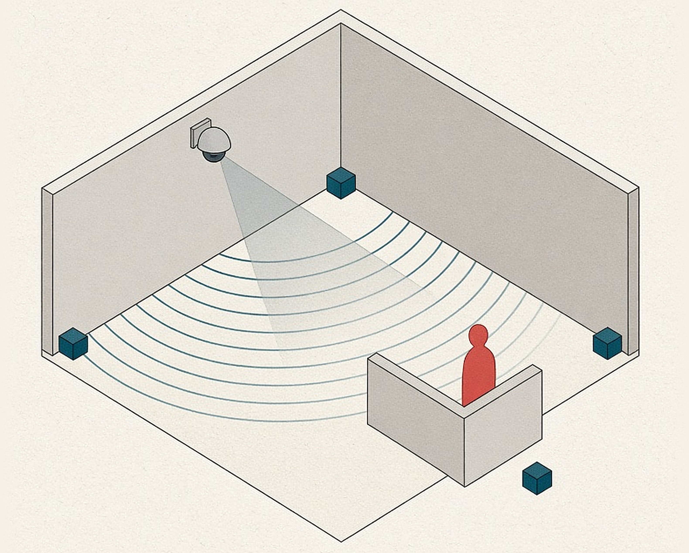
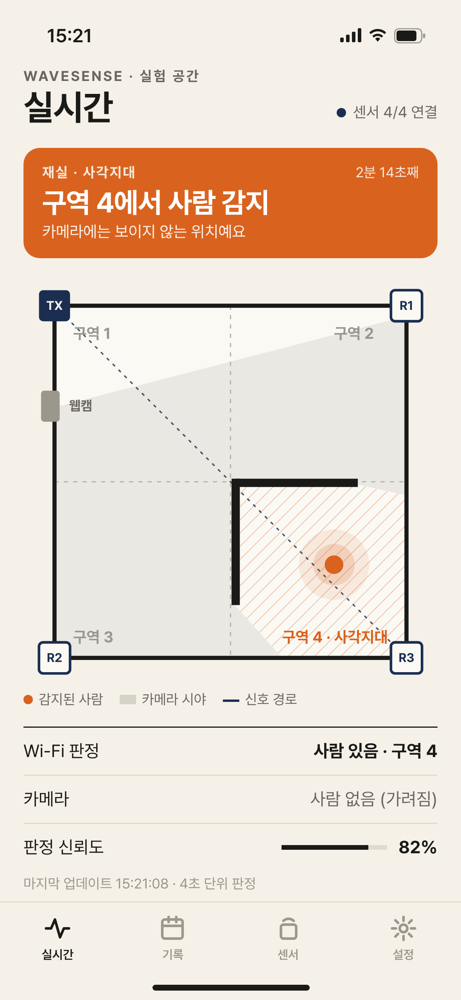
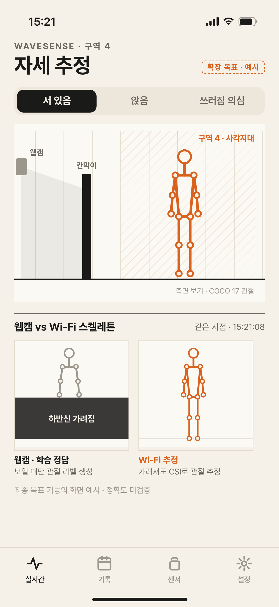

Wave
Sense
Wi-Fi CSI 기반 실내 인체 감지 시스템
팀장
김보성 |
팀원
이민서 · 가얼라
01
작품 소개
ESP32 4대
로 Wi-Fi 신호를 읽어
사람의 존재와 위치 구역
을 찾는다.
02
선정 배경
카메라가 못 보는 곳에도
사람은 있다.
가구·벽에 가려진 곳, 카메라를 둘 수 없는 곳은 CCTV로 확인하기 어렵다.

03
감지 원리
사람이 있으면
신호가 흔들린다.
1
송신기가 패킷을 보낸다
송신
수신
벽·가구 반사
2
사람이 경로를 바꾼다
송신
수신
3
수신기가 CSI 변화를 잰다
없음
있음
움직임
CSI(채널 상태 정보)의 흔들림 패턴을 AI가 학습해
존재와 구역
을 판정한다.
그림은 개념도
04
시스템 구성도
송신 1대 · 수신 3대 · 공간 배치 그림
1
2
3
구역 4 · 사각지대
웹캠
TX
RX1
RX2
RX3
송신 ESP32 ×1
패킷 계속 송신
수신 ESP32 ×3
모서리 · 높이 약 1m
노트북
수집 · 분석 · 판정
폰 · 대시보드
평면도 · 알림
웹캠 ×1
CCTV 역할 · 비교용
Wi-Fi 패킷
USB
결과 전송
Wi-Fi 경로
웹캠 시야
사각지대
감지된 사람
공간
3m×3m 이상 · 2×2 구역
설치
모서리 · 높이 약 1m
주의
송·수신 일직선 금지
사각지대
구역 4는 웹캠이 못 봄
05
동작 시나리오
구역 4에 사람이 들어오면
수집
수신 3대 CSI 동시 저장
분석
진폭 · 빈 채널 제거 · 4초 분할
판정
존재 여부 · 구역 1~4
표시
평면도 · 사각지대 폰 알림
06
화면 설계
평면도 · 대시보드 2~3개
화면은 예시 · 실측값 아님
대시보드 · 평면도
센서 4/4
구역 1
구역 2
구역 3
구역 4
사각지대 감지
구역 4 · 있음
Wi-Fi 판정
있음
웹캠
가려짐
판정 단위
4초
노트북 대시보드

폰 · 실시간

자세 추정
확장 목표
07
차별성
CCTV · 기존 감지 방식과 비교
CCTV
기존 감지 방식
WaveSense
알려주는 것
영상
움직임 발생
존재 · 구역
가려진 구역
사각지대 발생
—
Wi-Fi로 보완
감지에 영상
필요
—
불필요
화면
영상
알림
평면도 · 신뢰도
100
%
존재 감지 (가림 없음)
97.5
%
벽 너머 존재 감지
91
%
위치 5곳 구분
85
%
벽 너머 방 5개 구분
사전 검증 · 공개 ESP32 데이터 기준 · 다른 환경에 그대로 쓰면 56.82~69.57% → 실험 공간에서 직접 학습
CCTV를 대체하지 않고 함께 써서 미감지를 줄인다.
08
활용 분야 및 기대 효과
감지 단계에서 영상 불필요 · 어둡거나 가려진 곳도 확인
보안
CCTV 사각지대 보완
돌봄
독거 가구·유아 재실 확인
스마트홈
빈 방 조명·냉난방 자동 제어
개발 환경 · 참고 자료
ESP32 4대(송신 1 · 수신 3) · 노트북 · 웹캠 · Espressif ESP-IDF / esp-csi 예제(csi_send · csi_recv) · 사전 검증: 공개 ESP32 CSI 데이터셋 2종 (RandomForest, 로지스틱 회귀)
[1] J. Strohmayer, M. Kampel, “WiFi CSI-Based Long-Range Through-Wall Human Activity Recognition with the ESP32,” ICVS 2023, pp. 41–50, doi:10.5281/zenodo.8021099 [2] J. Strohmayer, M. Kampel, “Wallhack1.8k Dataset,” Zenodo, 2024, doi:10.5281/zenodo.13950918
[3] Espressif Systems, ESP-IDF / esp-csi